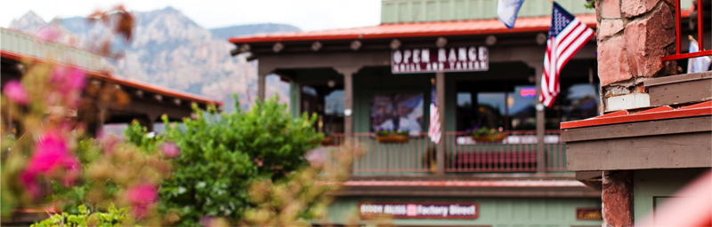
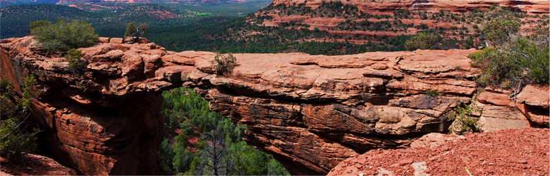

Седона — небольшой городок в аризоне, Заслуживающий большего!
Рассмотрим 5 причин, по которым Седона круче, чем гранд каньон!
настоящий городок
— №1 —седона — не аттракцион для туристов, там течет своя жизнь

Что можно в Sedona
Жилье
Рекомендуем пожить в настоящем мотеле, все как в кино!
Еда
Всегда заказывайте фирменный бургер, вы не разочаруетесь!
Сувениры
Не только китайского, но и местного производства!

там есть мост дьявола
— №2 —Да, по нему можно пройти! Если конечно вы осмелитесь
Что есть Sedona
небольшая площадь
— №3 —все достопримечательности находятся очень близко
красивая дорога
— №4 —ехать в седону из лас-вегаса совсем не скучно!
мало туристов
— №5 —Большинство едет в гранд каньон и толпится там
заинтересовались?
Укажите предполагаемые даты поездки, и мы покажем вам лучшие предложения гостиниц в седоне